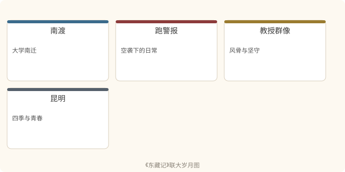

东藏记
一、基本信息
| 作者 | 宗璞 |
|---|---|
| 成书/出版 | 第六届茅盾文学奖获奖作品（中国作家网官方名单 C012；中国作家网 C025：'《东藏记》获第六届茅盾文学奖'） 《野葫芦引》：要在葫芦里装宇宙（中国作家网）（官方文学机构） |
| 国别/地区 | 中国 |
| 时代 | 现当代 · 当代 |
| 体裁 | 长篇小说 |
| 语言 | 汉语（白话） |

《东藏记》联大岁月图（主题·结构图）
二、创作背景
中国作家网（C025）：《野葫芦引》四部——'从1985年57岁写《南渡记》，到2019年91岁出版《北归记》'；背景为西南联大'大学南迁、在日寇的空袭下坚持办学'。
作者身世：哲学家冯友兰之女、清华外文系出身——写联大即写父辈与自身（C025）。
三、内容脉络
明纶大学南迁昆明：教授群像与流亡中的课业（通说待核）。
跑警报、篆刻、昆明的四季——日常里的风骨（通说待核）。
四、主要人物表
| 人物 | 身份 | 说明 |
|---|---|---|
| 孟樾（孟弗之） | 教授 | 明纶大学历史系（通说待核） |
| 嵋（孟嵋） | 学生 | 下一代（通说待核） |
五、主题与艺术特点
- 学人气节：'刚毅坚卓'的联大精神（通说）。
- 战争中的日常尊严（通说）。
- 典雅文体的当代延续（通说）。
六、影响与评论
- 中国作家网：'《东藏记》获第六届茅盾文学奖'；历经33年完成四记（C025）。
《野葫芦引》：要在葫芦里装宇宙（中国作家网）（官方文学机构） - 中国作家网官方名单：第六届茅盾文学奖获奖作品（C012）。
历届茅盾文学奖获奖作品一览（中国作家网）（官方文学机构）
七、阅读建议
难点
- 西南联大人物影射（孟弗之与冯友兰等——通说待核）。
- 昆明地名与联大校史。
- 《东藏记》（人民文学出版社，通说待核）。
先《南渡记》后《东藏记》→《西征记》《北归记》。
八、待核实
- 人物名与影射对应核对。
- 2001年前后出版（人民文学说）核对。
- '野葫芦'书名释义待核。
本页主要来源
宗璞的其他收录作品：东藏记